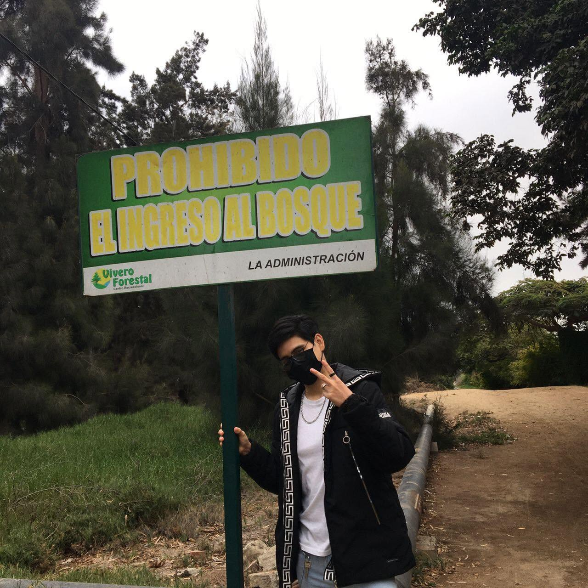

Estudiante de Ingeniería de Sistemas en la UNS (Chimbote). Apasionado por la tecnología, el desarrollo IoT y la resolución de problemas complejos.
Hablemos
Mi enfoque principal actualmente. Trabajo en el desarrollo de sistemas enfocados en el Internet de las Cosas para mis proyectos de tesis.
Estudiante de Ingeniería de Sistemas (UNS). Nací el 3 de mayo de 1998, construyendo mi camino paso a paso en el mundo del software y la ingeniería.
Antes del código, estuve en el rubro de la pintura. Ese trabajo físico me forjó una disciplina y un entendimiento del esfuerzo duro que hoy aplico al programar.
Soy cristiano y asisto a la iglesia "Cita con la Vida" en Nuevo Chimbote. Mi fe en Dios es mi ancla y el pilar que me da paz y propósito en medio de los exámenes y el estrés.
Mi mayor motivación. Mis padres (mi papá albañil y mi mamá Maura Rebeca), mi hermano (tesista de maestría en la UNT) y mi hermanita de 13 años. A ellos se suman mis mascotas: mi conejo de raza pequeña y un gatito joven que rescaté.
El soundtrack de mis horas de estudio y programación está compuesto principalmente por Rock Alternativo y Pop. Es la energía que necesito para mantener el enfoque.
Físicamente, libero estrés saliendo a correr. Digitalmente, busco retos que no perdonan. Mis juegos favoritos exigen pura paciencia y estrategia.
Mi lugar favorito no tiene Wi-Fi. Escapar a la playa, campos o bosques alejados (como en mi foto en el Vivero Forestal) es vital para recargar mi mente y volver fresco al código.
Si tienes alguna consulta técnica, una propuesta, o si simplemente quieres hablar de Elden Ring, no dudes en escribirme. Siempre estoy dispuesto a conectar con personas nuevas.